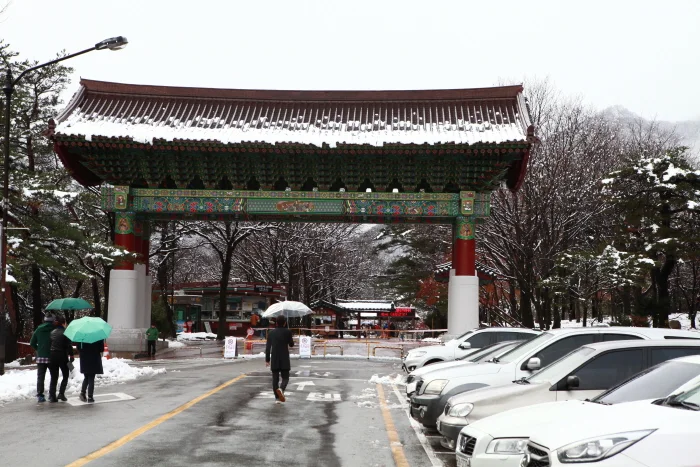
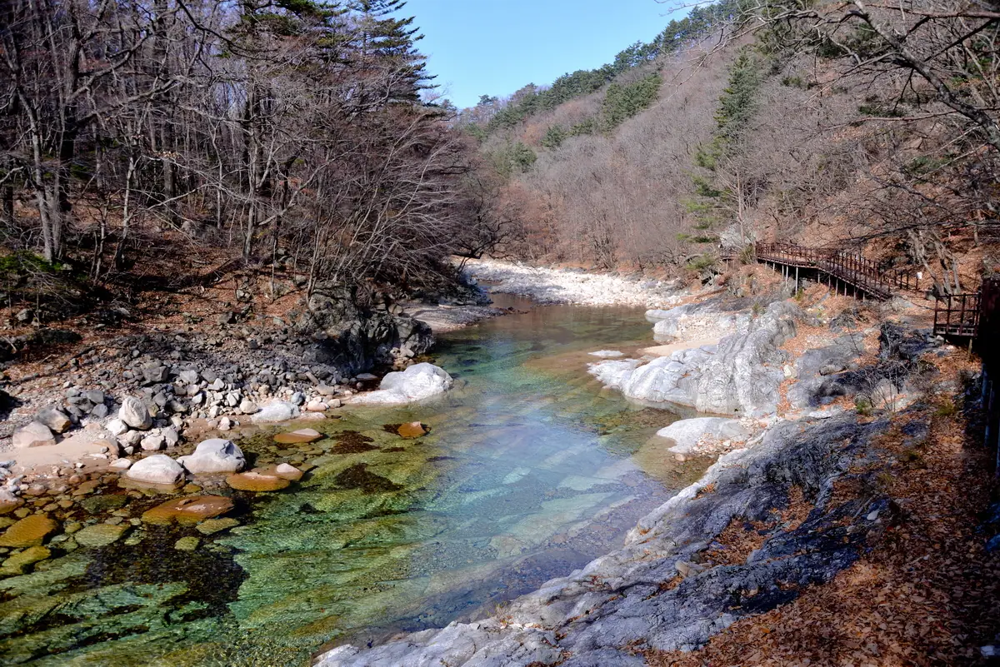

▲ 설악산국립공원 소공원 입구. 단풍철에는 이 주차 구역이 오전 일찍부터 채워진다 ⓒ 한국관광공사
설악산 단풍철 주말, 소공원 주차장이 꽉 차면 어떤 일이 벌어질까. 안내판이 뜨는 게 아니라 경찰과 모범운전자가 도로에 나와 수신호로 차량을 돌려보낸다. 예년 사례를 보면 통제 기간에는 이 방식이 반복적으로 적용됐다. 내비게이션이 소공원까지 안내한다고 해서 실제로 그곳에 주차할 수 있다는 보장은 없다는 뜻이다.
1. 만차 이후 벌어지는 일 — 수신호 통제

▲ 단풍철 설악산. 소공원 주차장 만차는 예년 단풍 절정기 주말마다 반복되는 상황이다 ⓒ CarPrism
예년 사례에 따르면, 단풍철 성수기 주말·공휴일 동안 소공원 주차장이 차면 진입로에서 경찰과 모범운전자가 수신호로 차량 진입을 통제했다. 자동화된 안내 시스템이 아니라 사람이 직접 교통을 정리하는 방식이다. 이 시간대에는 아무리 일찍 근처에 도착해도 자리가 없으면 그대로 돌아 나와야 한다.
2. 대안 — BC지구 주차장과 무료 셔틀

▲ 설악산 단풍 산책로. 소공원에 진입하지 못하면 이 풍경까지 셔틀로 이동해야 한다 ⓒ CarPrism
소공원이 막혔을 때의 대안은 설악동 BC지구 주차장이다. 이곳에 차를 세우면 통제 시간 동안 소공원까지 오가는 무료 셔틀버스가 운행된다. 즉 처음부터 소공원 대신 BC지구를 목적지로 잡고 출발하는 편이, 현장에서 되돌아 나오는 것보다 훨씬 효율적이다.
참고 통제 여부와 셔틀 운행 시간은 매년 국립공원공단과 속초시 공지에 따라 달라진다. 단풍 절정기 주말에 방문한다면 출발 전 설악산 관리사무소(033-636-4300)나 공식 홈페이지 공지를 확인하는 것이 가장 정확하다.
3. 케이블카 — 예약이 안 되는 이유

▲ 설악산 능선. 권금성 케이블카를 타면 이런 조망을 도보 등반 없이 볼 수 있다 ⓒ 한국관광공사
체력 부담 없이 전망을 보고 싶다면 권금성 케이블카가 대안이다. 다만 이 케이블카는 사전예약을 받지 않는다. 산악 지형 특성상 기상 상황에 따라 운행 여부가 수시로 바뀌기 때문에, 예약을 받았다가 취소하는 상황을 피하기 위해 당일 현장 매표소 구매만 운영하는 방식을 택하고 있다. 요금은 대인 왕복 16,000원이며, 운영시간은 평일 09:00, 주말 08:30 시작에 17:30 마감이지만 날씨에 따라 매일 달라질 수 있어 전날 공지를 확인해야 한다.
4. 소공원 주차 요금

▲ 설악산 계곡. 소공원 주차장 요금은 승용차 기준 6,000원이다 ⓒ 한국관광공사
소공원 주차장에 정상적으로 진입할 수 있다면, 요금은 승용차 기준 6,000원이다. 정액제로 운영되므로 시간에 따라 요금이 늘어나는 구조는 아니다. 다만 자리가 있느냐 없느냐가 관건인 만큼, 요금보다는 도착 시각이 훨씬 중요한 변수다.
5. 정리
체크포인트
- 단풍철 주말 소공원 만차 시 경찰 수신호로 진입 자체가 통제된다.
- 대안은 설악동 BC지구 주차장 + 무료 셔틀이다. 처음부터 이곳을 목적지로 잡는 편이 안전하다.
- 권금성 케이블카는 사전예약이 불가능하다. 당일 현장에서만 구매할 수 있다.
- 소공원 주차료는 승용차 6,000원 정액이다.
정확한 통제 일정은 설악산 관리사무소(033-636-4300)나 국립공원공단 공식 홈페이지에서 확인하는 것이 가장 정확하다.